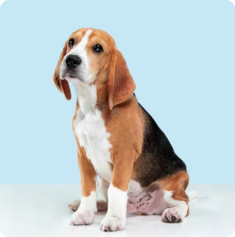
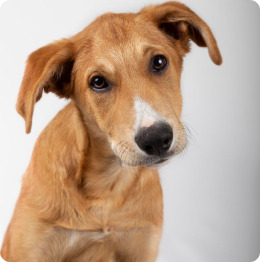
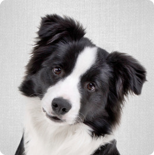
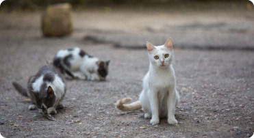
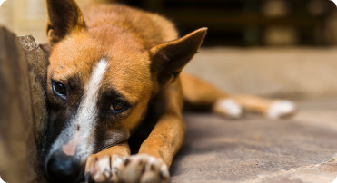
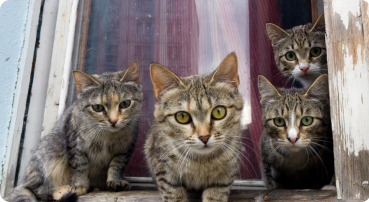

VOCÊ
está pronto para adotar um pet?
Vamos nessa! Procure por pets em abrigos e resgate-os.
125k +
Pets foram adotados
550 +
Abrigos de adoção
75 +
Pessoas envolvidas
Conheça os pets em destaque
Estes são alguns dos pets que estão em busca de um lar

Rosie
Beagle Puro
Fêmea, 1 ano e 03 meses

Caramelo
Vira-lata
Macho, 2 anos e 09 meses

Sam
Border Collie
Macho, 1 ano e 08 meses
Confira conselhos sobre adoção
Obtenha informações privilegiadas sobre adoção de pets e leve para casa um amigo peludo
1. Primeira Regra
Certifique-se de estar realmente preparado para o animal que escolher mais tarde
2. Segunda Regra
Certifique-se de que você está realmente preparado para a saúde do animal que escolher
3. Terceira Regra
Prepare um lar para o animal que você quer adotar
4. Quarta Regra
Certifique-se de levar realmente a sério o cuidado com o animal que você escolher
Eles merecem ser amados
Todos os animais têm direito a uma vida decente


